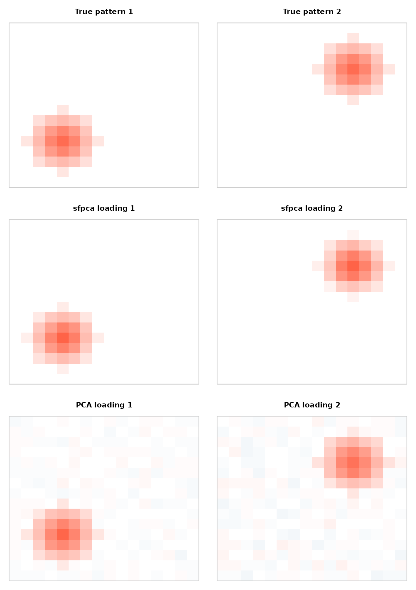

sfpca() estimates principal components that are
sparse and smooth at the same time.
Ordinary PCA gives you loadings that are dense — every variable loads on
every component — and that spread noise across the whole map. If you
know your variables live somewhere (voxels on a grid, sensors in a room,
wavelengths along a spectrum) and that the real signal is
localised and spatially coherent, you can ask for both
properties directly.
The two requests pull in different directions, which is the point. Sparsity alone gives you a scatter of isolated survivors; smoothness alone gives you a blurred map with no zeros anywhere. Together they give compact regions with soft edges.
When to reach for it
Use sfpca() when both of these hold:
- The loadings should be mostly zero — only a minority of variables participate in any given component.
- The non-zero part should be coherent in some known geometry — neighbours should resemble each other.
If you only want structure and not sparsity, genpca()
with a smoothing metric is the simpler tool; see
vignette("gpca-metrics"). If you want sparsity with no
geometry, an ordinary sparse PCA will do. sfpca() is for
the case where you want both, and it is worth knowing that it reaches
them by a different mechanism than genpca() — see Metric form versus constraint
form below, because the two take opposite inputs for the
same intent.
A worked example
Two spatially localised signals on a 16 × 16 grid, each modulated by its own temporal profile, buried in noise. The spatial patterns are Gaussian bumps truncated to zero away from their centres, so they are genuinely sparse (29 of 256 locations) and smooth on their support:
set.seed(11)
g <- 16; p <- g * g; n <- 64
gr <- expand.grid(r = 1:g, c = 1:g)
# NOTE the orientation: spatial dimensions in ROWS, variables in COLUMNS
spat_cds <- rbind(gr$r, gr$c)
dim(spat_cds)
#> [1] 2 256
blob <- function(r0, c0, s = 1.6) {
z <- exp(-((gr$r - r0)^2 + (gr$c - c0)^2) / (2 * s^2))
z[z < 0.15] <- 0 # compact support => sparse
z / sqrt(sum(z^2))
}
v1 <- blob(5, 5); v2 <- blob(12, 12)
tt <- (0:(n - 1)) / n # orthogonal temporal profiles
u1 <- sin(2 * pi * tt); u1 <- u1 / sqrt(sum(u1^2))
u2 <- sin(4 * pi * tt); u2 <- u2 / sqrt(sum(u2^2))
signal <- 30 * tcrossprod(u1, v1) + 20 * tcrossprod(u2, v2)
X <- signal + matrix(rnorm(n * p, sd = 0.25), n, p)
c(true_support = sum(v1 != 0), of = p,
SNR = round(norm(signal, "F") / norm(X - signal, "F"), 2))
#> true_support of SNR
#> 29.00 256.00 1.13The signal-to-noise ratio is close to 1, so this is not a giveaway. Fit two components:
fit <- sfpca(X, K = 2, spat_cds = spat_cds)
fit
#> Sparse Functional PCA (sfpca)
#> components: 2
#> dims: 64 obs x 256 vars
#> singular values: 29.97, 20.31
#> verbs: scores(), components(), sdev(), reconstruct()With every penalty left at its default, the loadings come back sparse without being told how sparse to be:
V <- multivarious::components(fit)
c(nonzero_PC1 = sum(V[, 1] != 0), nonzero_PC2 = sum(V[, 2] != 0), of = p)
#> nonzero_PC1 nonzero_PC2 of
#> 31 29 256Against the truth, and against ordinary PCA on the same matrix:
pc <- prcomp(as.matrix(X), center = TRUE, rank. = 2)
rbind(
sfpca = c(PC1 = abs(cor(V[, 1], v1)), PC2 = abs(cor(V[, 2], v2))),
pca = c(PC1 = abs(cor(pc$rotation[, 1], v1)), PC2 = abs(cor(pc$rotation[, 2], v2)))
)
#> PC1 PC2
#> sfpca 0.9974423 0.9934027
#> pca 0.9918938 0.9823328Correlation alone barely separates them — PCA finds where the signal is perfectly well. The difference is everything else: PCA has to spend all 256 loadings to say it, so the map carries a noise floor everywhere the true pattern is zero.

Top row: the true spatial patterns. Middle: sfpca loadings – compact, and exactly zero away from the bumps. Bottom: ordinary PCA loadings, which recover the location but smear noise across all 256 sites.
The temporal factors are recovered too — those are the
ou slot, penalised for roughness along the row index:
U <- fit$ou
c(PC1 = abs(cor(U[, 1], u1)), PC2 = abs(cor(U[, 2], u2)))
#> PC1 PC2
#> 0.9985844 0.9943258Because the loadings are zero off the bumps, the reconstruction discards noise that PCA is obliged to keep. Measured against the noiseless signal:
What the two penalties do
Each factor carries two penalties, and they are worth separating in
your head. For the column factor v those are
lambda_v (sparsity) and alpha_v (smoothness);
lambda_u and alpha_u do the same for the row
factor u. Switching each off in turn shows which is
responsible for what:
variants <- list(
"defaults" = list(),
"no sparsity (lambda_v = 0)" = list(lambda_v = 0),
"no smoothing (alpha_v = 0)" = list(alpha_v = 0),
"neither" = list(lambda_v = 0, alpha_v = 0),
"heavy sparsity (lambda_v = 3)" = list(lambda_v = 3)
)
t(sapply(variants, function(extra) {
f <- do.call(sfpca, c(list(X = X, K = 1, spat_cds = spat_cds), extra))
v <- multivarious::components(f)[, 1]
c(nonzero = sum(v != 0), cor_with_truth = round(abs(cor(v, v1)), 3))
}))
#> nonzero cor_with_truth
#> defaults 31 0.997
#> no sparsity (lambda_v = 0) 256 0.992
#> no smoothing (alpha_v = 0) 29 0.995
#> neither 256 0.992
#> heavy sparsity (lambda_v = 3) 21 0.955Sparsity is what produces the zeros: drop lambda_v and
all 256 sites load. Smoothness does not create zeros — it decides
which sites survive and keeps the surviving map coherent. And
sparsity can be overdone: at lambda_v = 3 the support is
cut below the true 29 sites and the recovered pattern degrades.
Choosing the penalties
Both kinds of penalty have defaults you can usually leave alone.
Sparsity (lambda_u,
lambda_v). Left NULL, each is chosen
per component by a BIC-style criterion along a regularisation path —
nlambda values log-spaced down from a closed-form
lambda_max, warm-started. The all-zero solution is a
legitimate candidate: a component with no support worth its degrees of
freedom comes back exactly zero with d = 0, which is a
feature, not a failure. Fix the value explicitly to bypass the
search.
Smoothness (alpha_u,
alpha_v). Left NULL, each defaults to
,
so the roughest direction of the penalty is weighted exactly as strongly
as the identity term. That makes the default invariant to how you scaled
Omega and bounds the condition number of every inner solve
by 2.
What was selected is stored on the fit:
data.frame(
component = 1:2,
lambda_u = signif(fit$lambda_u, 3), lambda_v = signif(fit$lambda_v, 3),
alpha_u = signif(fit$alpha_u, 3), alpha_v = signif(fit$alpha_v, 3)
)
#> component lambda_u lambda_v alpha_u alpha_v
#> 1 1 0.0891 0.859 0.0626 0.204
#> 2 2 0.2950 0.912 0.0626 0.204The penalty shape is set by penalty_u /
penalty_v: "l1" (the default) or
"scad". SCAD applies less shrinkage to large coefficients,
so surviving loadings keep more of their magnitude, at the price of a
non-convex subproblem.
Reading the output
sfpca() returns a bi_projector, so the
usual multivarious verbs work: scores()
for
,
components() for the sparse loadings
,
sdev() for
,
and reconstruct(). Two things about it differ from
genpca() and will bite if you assume otherwise.
The example above is too well behaved to show either, which is itself worth knowing: its two components were built orthogonal, so they come out very nearly orthogonal and the pitfalls stay hidden. Refit on data whose components share a temporal profile, and both surface:
u2c <- sin(2 * pi * tt + 0.9); u2c <- u2c / sqrt(sum(u2c^2))
round(sum(u1 * u2c), 3) # the two profiles now overlap
#> [1] 0.622
set.seed(11)
Xc <- 30 * tcrossprod(u1, v1) + 20 * tcrossprod(u2c, v2) +
matrix(rnorm(n * p, sd = 0.25), n, p)
fc <- sfpca(Xc, K = 2, spat_cds = spat_cds)
Uc <- fc$ou; Vc <- multivarious::components(fc)The factors are not orthogonal. Each rank-1 term comes from its own constraint-form subproblem rather than a joint SVD. Columns are unit-norm, but and in general:
round(crossprod(Uc), 3) # would be the identity for a joint SVD
#> PC1 PC2
#> PC1 1.000 -0.128
#> PC2 -0.128 1.000
round(crossprod(Vc), 3)
#> PC1 PC2
#> PC1 1.000 -0.133
#> PC2 -0.133 1.000sdev() is not the singular values of
X. It is the covariance each component captures,
,
where
is the matrix after the previous components have been deflated
out. Only the first component is measured against the original data:
Xm <- as.matrix(Xc)
dc <- multivarious::sdev(fc)
defl <- Xm - dc[1] * tcrossprod(Uc[, 1], Vc[, 1])
c(sdev_2 = dc[2],
u2_X_v2 = as.numeric(t(Uc[, 2]) %*% Xm %*% Vc[, 2]), # does NOT match
u2_Xdefl_v2 = as.numeric(t(Uc[, 2]) %*% defl %*% Vc[, 2])) # matches
#> sdev_2 u2_X_v2 u2_Xdefl_v2
#> 13.93150 14.49848 13.93150The gap is small here but it is not noise, and it grows with how much
the components share. Treat sdev() as “covariance captured
by this component given the previous ones”, never as a singular value of
X.
Because
is not orthogonal, reconstruct() multiplies the stored
factors directly as
rather than going through pseudo-inverse identities, which would not
reproduce the fitted model.
Metric form versus constraint form
This is the trap when moving between sfpca() and
genpca(): they take opposite inputs for the same
intent.
In genpca(), the structure matrix
is a metric, and a metric amplifies its own dominant
eigendirections — the loadings are
.
To get smooth loadings you pass a smoother (a kernel,
an adjacency matrix,
).
In sfpca(), the same information enters as a
constraint,
,
which charges rough
against a fixed budget. So you supply the roughness
operator directly, and a larger alpha_v means a
smoother result.
genpca() |
sfpca() |
|
|---|---|---|
| Structure enters as | metric | constraint |
| For smooth loadings, supply | a smoother (kernel, ) | a roughness operator (, a Laplacian) |
| Turning the knob up | amplifies ’s top directions | smooths more |
The same Laplacian therefore smooths in sfpca()
and roughens in genpca().
vignette("gpca-metrics") works through the metric-side
version of this in detail.
Practical notes
spat_cds is dimensions × variables.
Rows are spatial axes, columns are variables, so
ncol(spat_cds) must equal ncol(X). This is the
transpose of the layout a coordinate data frame usually has, and it is
the easiest thing to get wrong here — so the shape is checked up
front:
sfpca(X, K = 1, spat_cds = t(spat_cds))
#> Error in `sfpca()`:
#> ! `spat_cds` must have one column per variable: ncol(X) is 256 but ncol(spat_cds) is 2. It looks transposed -- `spat_cds` is dimensions x variables, so pass t(spat_cds).For a one-dimensional axis — a spectrum, a transect, a genome
position — pass matrix(coords, nrow = 1) rather than a bare
vector.
The column penalty is built for you.
Omega_v is constructed internally from
spat_cds via a knn nearest-neighbour graph
(default min(6, ncol(X) - 1)); there is no
Omega_v argument. Omega_u can be
supplied, and defaults to a second-difference operator — which assumes
the rows are ordered, as with a time series. If your rows are unordered
samples, pass alpha_u = 0 rather than smoothing along a
meaningless axis.
Components are extracted by deflation, so cost grows
linearly in K and later components are fit to residuals.
Ask for the number you intend to interpret.
Where next
vignette("gpca-metrics") covers the metric-side
treatment of the same structural ideas, including how to build kernels,
Laplacians and graph penalties.
vignette("structured-noise") discusses choosing between
them when several kinds of structure are present at once.
Reference
Allen, G. I., & Weylandt, M. (2019). Sparse and functional principal components analysis. In 2019 IEEE Data Science Workshop (DSW) (pp. 11–16). doi:[10.1109/DSW.2019.8755778](https://doi.org/10.1109/DSW.2019.8755778). Also available as arXiv:1309.2895, first posted in 2013 and revised through 2019 — the preprint and the DSW paper are the same work, which is why the literature cites both years.